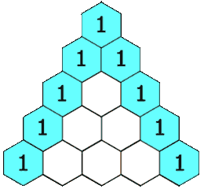

119. 杨辉三角 II
只开一行数组原地滚动：每算新的一行，从右往左累加左邻（它还是上一行的旧值）。
思路
row先放第 0 行[1]，之后每轮把row原地更新成下一行。- 新行
row[j] = 上一行 row[j] + 上一行 row[j-1]：从右往左更新，读到的row[j-1]必定还是上一行的旧值。 - 两端不用特判：
row[0]恒为 1；行尾row[i]由「0 + 左邻 1」自然滚出 1。
图解
最优解
1import java.util.*;2 3class Solution {4 public List<Integer> getRow(int rowIndex) {5 // 单行滚动：整个三角只用这一行数组6 int[] row = new int[rowIndex + 1];7 row[0] = 1;8 for (int i = 1; i <= rowIndex; i++) {9 // 从右往左更新：读到的 row[j-1] 还是上一行的旧值10 for (int j = i; j >= 1; j--) row[j] += row[j - 1];11 }12 List<Integer> ans = new ArrayList<>();13 for (int v : row) ans.add(v);14 return ans;15 }16}题目
给定一个非负索引 rowIndex，返回「杨辉三角」的第 rowIndex 行。
在「杨辉三角」中，每个数是它左上方和右上方的数的和。

示例 1:
输入: rowIndex = 3 输出: [1,3,3,1]
示例 2:
输入: rowIndex = 0 输出: [1]
示例 3:
输入: rowIndex = 1 输出: [1,1]
提示:
0 <= rowIndex <= 33
进阶：
你可以优化你的算法到 O(rowIndex) 空间复杂度吗？
题面取自力扣当前版本。
数据快照 2026-11-04。题面版权归力扣所有，本站点仅供本人学习使用，请勿对外发布。